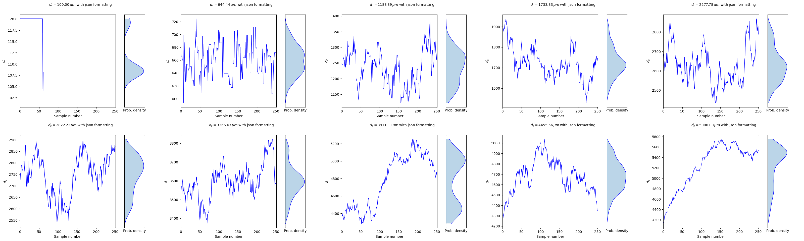

Bayesian Inference in Time Series Analysis
- Concept: Bayesian inference updates the probability of a model parameter's value based on observed time series data.
- Process: It combines prior knowledge about the parameter (prior probability) with the likelihood of observing the data given the parameter values to produce an updated probability (posterior probability).
- Bayes' Theorem: The process is governed by the formula \( P(\text{Parameter}|\text{Time Series}) = \frac{P(\text{Time Series}|\text{Parameter}) \times P(\text{Parameter})}{P(\text{Time Series})} \).
- Application: This approach is particularly valuable in time series analysis for incorporating prior knowledge and handling complex, dynamic data.
Markov Chain Monte Carlo (MCMC) in Bayesian Time Series Analysis
- Purpose: MCMC is used to approximate the posterior distribution of a parameter when it's too complex to calculate directly in the context of time series data.
- Method: It generates a series of samples through a Markov chain process, where the distribution of these samples converges to the posterior distribution of the parameter.
- Algorithms: Includes techniques like Metropolis-Hastings and Gibbs sampling, tailored to explore the parameter space efficiently.
- Utility: The samples from MCMC provide a way to estimate and understand the posterior distribution, allowing for predictions and uncertainty quantification in time series models.
Results
